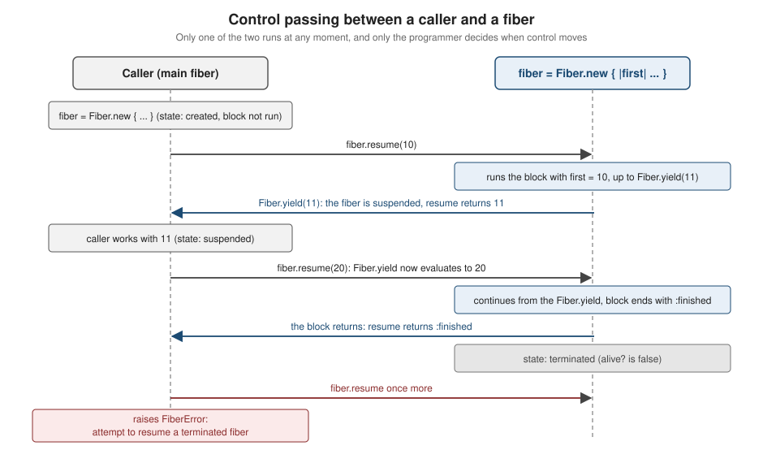
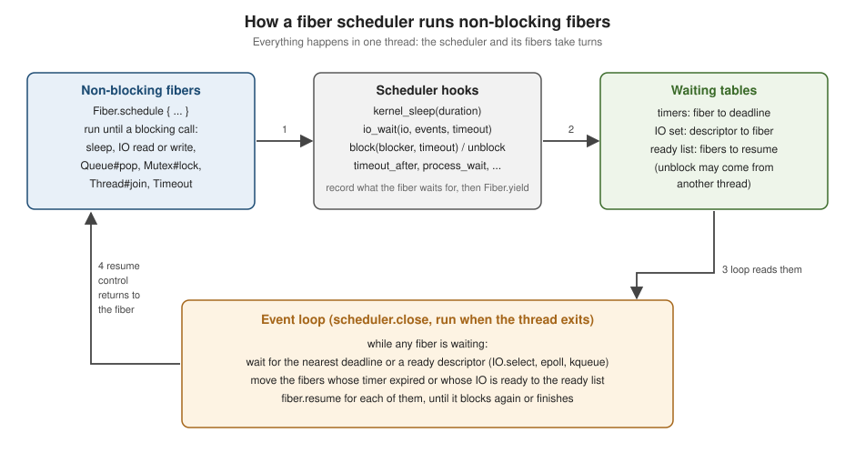

Fibers and the Fiber Scheduler
|
This content was generated with the assistance of AI and should be verified against the official documentation before being relied on in production. |
This page is written against Ruby 4.0 (4.0.7, checked on 2026-10-18); features newer than Ruby 3.0 name the version that introduced them. A fiber is a block of code that can be paused and resumed, with its own stack, that runs on the thread that resumed it and gives up control only when the program says so. Nothing preempts a fiber and nothing runs two fibers at the same time, which makes fibers the smallest of Ruby’s concurrency tools: a way to write generators, coroutines and pipelines as straight-line code, and, since Ruby 3.0, the building block of non-blocking I/O, where a fiber scheduler switches to another fiber whenever one would wait.
This page covers both halves. The first half is the core Fiber class: creating and driving fibers, passing values, the states of a
fiber and the FiberError cases, fibers as generators (and the fibers hidden inside Enumerator#next), exceptions, Fiber#raise and
Fiber#kill, resume against transfer, and the three kinds of per-execution state: Thread#[] variables, thread variables and
fiber storage. The second half is the scheduler interface: what makes a fiber non-blocking, the hooks Ruby calls, a complete working
scheduler of about a hundred lines, the operations that do and do not reach the scheduler, timeouts, closing an IO that a fiber is
waiting on, how Mutex, Queue and Monitor behave under a scheduler, and the community schedulers (the async gem and the Falcon web
server) that people use in practice.
Threads and the GVL are in Threads and the GVL, and parallel execution without a global lock is in Ractors. Enumerators, which are generators built on fibers, are in Enumerators and Lazy Evaluation; blocks, which are what a fiber runs, in Blocks, Procs and Lambdas; and the exception classes in Exceptions and Error Handling. Sockets and HTTP, the usual reason to want a scheduler, are in Networking and HTTP, and child processes in Processes, Signals and Shell. For the same ideas in other languages, see Fibers in other languages at the end of the page.
Every example on this page was syntax-checked with ruby -wc, run with ruby -w on Ruby 4.0.7 and linted with RuboCop 1.92 using the
configuration of the running shelf gem (target Ruby 4.0, double-quoted strings). The output shown in # => comments, and in the output
blocks, is the real output; the one example that needs a third-party gem is marked as not run. Version-specific statements were
checked by running the same code on Ruby 3.2, 3.3 and 3.4 as well, or are taken from the NEWS files. The examples reuse the names of the
shelf library catalogue used throughout this section; each file is self-contained so it can be run on its own.
Fibers, threads, Ractors and processes
Ruby has four ways to do more than one thing at a time. They differ in who decides when to switch and whether Ruby code really runs in parallel.
| Thread | Fiber | Ractor | Process | |
|---|---|---|---|---|
Who switches |
The VM, preemptively (a time slice, or when a thread blocks) |
The program: |
The VM, preemptively; each Ractor has its own threads |
The operating system |
Ruby code in parallel |
No, one thread at a time holds the GVL |
No, a fiber runs on the thread that resumed it |
Yes, Ractors do not share the lock |
Yes |
Shares objects |
Everything |
Everything on its thread |
Only shareable objects; others are moved or copied |
Nothing (copies, pipes, files) |
Mutable shared state needs |
|
Nothing between switches; locks only where a switch can happen inside the critical section |
Messages through ports |
Pipes, sockets, files |
Typical use |
Blocking I/O in parallel, background work |
Generators, coroutines, lazy pipelines, event-loop concurrency for thousands of connections |
CPU-bound parallel work |
Isolation, CPU-bound parallel work, the |
The GVL (global VM lock, also called the GIL) is the reason threads do not make pure Ruby CPU work parallel; it is explained in Threads and the GVL. A fiber needs no lock because two fibers of one thread can never run at once: control moves only at explicit points. That is both the strength and the limit of fibers. A fiber that never reaches a switching point (a long computation, a blocking call the scheduler does not know) stops every other fiber on its thread.
The official guide describes fibers as primitives for lightweight cooperative concurrency: code blocks that can be paused and resumed, which are never preempted and whose scheduling is the programmer’s job, not the VM’s. Unlike stackless coroutines in other languages, each Ruby fiber comes with a stack, so a fiber can be paused from deep inside nested method calls.
Source: Ruby 4.0 documentation: Fiber
Creating and driving a fiber
Fiber.new, resume and Fiber.yield
Fiber.new takes a block and returns a fiber in the created state; the block does not run. fiber.resume starts it, or continues it
from the point where it last called Fiber.yield. Values travel both ways:
-
the arguments of the first
resumebecome the block parameters; -
the arguments of a later
resumebecome the value of theFiber.yieldexpression the fiber is paused at; -
the argument of
Fiber.yieldbecomes the value of theresumecall that is waiting; -
when the block finishes, its last expression becomes the value of the final
resume.
Several arguments to resume or Fiber.yield arrive as an Array on the other side, no arguments as nil, exactly like block
parameters. A fiber can be resumed only until the block ends; after that alive? is false and another resume raises FiberError.

# frozen_string_literal: true
# A fiber does not run until it is resumed.
fiber = Fiber.new do |first|
puts "started with #{first.inspect}"
second = Fiber.yield(first + 1)
puts "resumed with #{second.inspect}"
third = Fiber.yield(second * 2)
puts "resumed again with #{third.inspect}"
:finished
end
fiber.alive? # => true
fiber.resume(10) # => 11
fiber.resume(20) # => 40
fiber.resume(30) # => :finished
fiber.alive? # => false
begin
fiber.resume
rescue FiberError => e
e.message # => "attempt to resume a terminated fiber"
endSource: Fiber.new; Fiber#resume; Fiber.yield
Running the file prints what the block says while it runs; every resume returns the value of the next Fiber.yield (or the block value
for the last one):
started with 10
resumed with 20
resumed again with 30Source: Fiber#resume; Fiber.yield; Fiber#alive?
A few details that surprise people:
-
Fiber.newwithout a block raisesArgumentError(tried to create Proc object without a block). -
The block’s local variables belong to the fiber, and it can also read and change the local variables of the scope it was created in, like any block (closures are covered in Blocks, Procs and Lambdas).
-
Fiber.yieldoutside any fiber (from the main fiber) is an error, not a no-op. -
The arguments of
Fiber.yieldand ofresumefollow block-parameter rules, including keyword arguments:Fiber.new { |*args, **options| ... }receivesresume(1, key: 2)as[1]and{key: 2}. -
Fiber.currentreturns the running fiber. On the main thread outside of anyFiber.newit returns the root fiber, which exists for every thread and is always a blocking fiber (see Blocking and non-blocking fibers).
States and inspect
A fiber is created (never resumed), resumed (running, or waiting for a fiber it resumed), suspended (paused in Fiber.yield or
transfer) or terminated (the block ended or an exception escaped). Fiber#alive? is true for the first three. The state is the last
word of Fiber#inspect and Fiber#to_s, together with the file and line of the block:
# frozen_string_literal: true
# Fiber#inspect ends with the state: "#<Fiber:0x... file.rb:5 (created)>".
state = ->(fiber) { fiber.inspect[/\((.+)\)>\z/, 1] }
fiber = Fiber.new { Fiber.yield 1 }
state.call(fiber) # => "created"
fiber.resume # => 1
state.call(fiber) # => "suspended"
fiber.resume # => nil
state.call(fiber) # => "terminated"
state.call(Fiber.current) # => "resumed"
fiber.alive? # => falseSource: Fiber#to_s; Fiber.current
FiberError: what can go wrong
Every illegal switch raises FiberError, a StandardError. The messages were collected on Ruby 4.0.7; they are worth recognising because they are
the only hint of which rule was broken:
# frozen_string_literal: true
def message
yield
rescue FiberError => e
e.message
end
done = Fiber.new { 1 }
done.resume
message { done.resume } # => "attempt to resume a terminated fiber"
message { Fiber.yield } # => "attempt to yield on a not resumed fiber"
me = Fiber.new { me.resume }
message { me.resume } # => "attempt to resume the current fiber"
outer = Fiber.new { Fiber.new { outer.resume }.resume }
message { outer.resume } # => "attempt to resume a resumed fiber (double resume)"
suspended = Fiber.new { Fiber.yield }
suspended.resume
other_thread = Thread.new { message { suspended.resume } }
other_thread.value # => "fiber called across threads"
message { suspended.transfer } # => "attempt to transfer to a yielding fiber"
message { done.transfer } # => "dead fiber called"
message { Fiber.new { 1 }.raise("boom") } # => "cannot raise exception on unborn fiber"Source: FiberError; Fiber#resume; Fiber#transfer
Two rules sit behind the list. A fiber belongs to the thread that created it: resuming it, killing it or raising into it from another
thread is a FiberError. And control has a direction: a fiber that is already running (the current one, or one waiting in the chain of
resume calls that led to the current fiber) cannot be resumed again.
Backtraces
Fiber#backtrace (Ruby 3.0) returns the stack of a suspended fiber, with the innermost frame (the Fiber.yield itself) first; it takes
the same start, count and range arguments as Kernel#caller. Fiber#backtrace_locations returns the same frames as
Thread::Backtrace::Location objects. A fiber that has not started yet, or has finished, has an empty stack:
# frozen_string_literal: true
def inner = Fiber.yield
def outer = inner
fiber = Fiber.new { outer }
fiber.backtrace # => []
fiber.resume
fiber.backtrace
# => ["fiber_backtrace.rb:3:in 'Fiber.yield'",
# "fiber_backtrace.rb:3:in 'Object#inner'",
# "fiber_backtrace.rb:4:in 'Object#outer'",
# "fiber_backtrace.rb:6:in 'block in <main>'"]
fiber.backtrace(1, 2).first # => "fiber_backtrace.rb:3:in 'Object#inner'"
location = fiber.backtrace_locations.first
[location.label, location.lineno] # => ["Fiber.yield", 3]
fiber.resume
fiber.backtrace # => []The reference page for the method says a finished fiber returns nil; Ruby 4.0.7 returns an empty Array for both unstarted and finished
fibers, so test with empty? rather than nil?.
Source: Fiber#backtrace; Fiber#backtrace_locations
Fibers are cheap, but each has a stack
A fiber is far lighter than a thread (no operating-system thread is created and switching is a function-call-sized operation), but each
fiber owns a VM stack and a machine stack. Both are smaller than a thread’s, so deep recursion that works on the main thread can raise
SystemStackError (stack level too deep) inside a fiber. Three environment variables from the ruby(1) manual page tune this (all values in bytes):
| Variable | Meaning | Default (64-bit) |
|---|---|---|
|
VM stack of each fiber: the stack used by Ruby code |
131072 |
|
Machine © stack of each fiber: used by the operating system and C extensions |
524288 |
|
|
1 |
Lower values allow more fibers at the price of a higher chance of SystemStackError and, for the machine stack, of segmentation faults;
the threads have their own pair of variables (RUBY_THREAD_VM_STACK_SIZE and RUBY_THREAD_MACHINE_STACK_SIZE, one mebibyte by default on
64-bit CPUs). The next file measures how deep a method can recurse in the main thread, in a thread and in a fiber:
# frozen_string_literal: true
# How deep can a method recurse before SystemStackError?
def depth(level = 0)
depth(level + 1)
rescue SystemStackError
level
end
in_main = depth
in_thread = Thread.new { depth }.value
in_fiber = Fiber.new { depth }.resume
puts "main=#{in_main} thread=#{in_thread} fiber=#{in_fiber}"
puts in_fiber < in_mainSource: SystemStackError; Fiber
On the test machine it printed the first block below; running it again with a larger fiber VM stack gives the second one. The absolute depths depend on the machine and the Ruby build, only the ratio matters:
$ ruby -w fiber_stack.rb
main=10917 thread=10917 fiber=1360
true
$ RUBY_FIBER_VM_STACK_SIZE=524288 ruby -w fiber_stack.rb
main=10917 thread=10917 fiber=5456
trueSource: Fiber (it refers to the ruby(1) manual page for the fiber stack sizes); the variables are listed in the ruby(1) manual page installed with Ruby (man ruby).
On the test machine, creating and finishing 100000 trivial fibers in a loop took about half a second, which is why fibers are used for one-per-connection or one-per-request designs; measure before relying on any such number, and see Performance, Benchmarking and Profiling for how.
Fibers as generators
The most common use of the plain resume/yield pair is a generator: code that produces a sequence one item at a time and remembers
where it stopped, without building the whole sequence or hand-writing a state machine. The loop and the local variables of the
generator are simply the state of the paused fiber.
# frozen_string_literal: true
module Shelf
Book = Data.define(:isbn, :title)
end
# An infinite generator: a fiber that hands out shelf marks on demand.
marks = Fiber.new do
number = 0
loop { Fiber.yield format("SH-%04d", number += 1) }
end
marks.resume # => "SH-0001"
Array.new(2) { marks.resume } # => ["SH-0002", "SH-0003"]
# A finite generator: the fiber ends when its block returns.
books = [
Shelf::Book.new("9780441172719", "Dune"),
Shelf::Book.new("9780345339683", "The Hobbit"),
Shelf::Book.new("9780261102217", "The Fellowship of the Ring")
]
pages = Fiber.new do
books.each_slice(2) { |page| Fiber.yield page.map(&:title) }
nil
end
titles = []
while (page = pages.resume)
titles << page
end
titles.map(&:size) # => [2, 1]
titles.flatten.last # => "The Fellowship of the Ring"
pages.alive? # => false
# The same infinite generator as an Enumerator, which is built on a fiber.
issuer = Enumerator.new do |yielder|
number = 0
loop { yielder << format("SH-%04d", number += 1) }
end
issuer.next # => "SH-0001"
issuer.peek # => "SH-0002"
issuer.take(2) # => ["SH-0001", "SH-0002"]
issuer.lazy.map(&:downcase).first(2) # => ["sh-0001", "sh-0002"]Source: Fiber; Enumerator
Notes on the example:
-
The first generator never ends, so it has no terminating
nil; callers take as many marks as they need. -
The second generator ends by returning from the block. The last
resumereturns the block’s value (nilhere), which thewhileloop uses as the end marker. Using a value such asnilas a sentinel works only ifnilis never a real item; usealive?or a dedicated sentinel when it could be. -
In real code, prefer
Enumerator.new(the last part of the example). It providesnext,peek,rewind,size,take,lazyand all ofEnumerable, reports the end withStopIterationinstead ofFiberError, and can be consumed both externally and internally. TheFiberversion is what you write when you need to drive the switching yourself or to exchange data in both directions.
The fibers inside Enumerator#next
An Enumerator is not itself a fiber, but its external iteration methods (next, peek, next_values, peek_values) are implemented
with one: the first call creates a fiber that runs the enumerator’s block, and each next resumes it until the next value is yielded.
Internal iteration (each, map, to_a, take, …) runs the block directly in the caller’s fiber with no fiber involved. The two
styles are therefore not equivalent in everything they observe, and the most common surprise is fiber-local state:
# frozen_string_literal: true
main = Fiber.current
Thread.current[:branch] = "Central" # fiber-local, despite the Thread receiver
where = Enumerator.new do |yielder|
yielder << Fiber.current.equal?(main)
yielder << Thread.current[:branch]
end
# Internal iteration (each, to_a, map ...) runs the block in the caller's fiber.
where.to_a # => [true, "Central"]
# External iteration (next, peek) runs it in a fiber of its own.
where.next # => false
where.next # => nil
# The end of the sequence raises StopIteration, which loop rescues.
begin
where.next
rescue StopIteration => e
e.message # => "iteration reached an end"
end
where.rewind.next # => falseSource: Enumerator#next; Enumerator#peek; Enumerator#rewind
Thread.current[:branch] returned nil under next because Thread#[] is fiber-local (see Fiber-local state
below). The same effect hides in libraries that keep a "current request" or "current connection" in Thread.current[...] and are then
used from an enumerator. Other consequences of the fiber behind next: the enumerator keeps its stack alive until it finishes or is
garbage collected, Fiber.current inside the block differs, and the fiber cannot cross threads (an enumerator advanced with next in one
thread and again in another raises FiberError). The lazy variants and the full set of enumerator methods are in
Enumerators and Lazy Evaluation.
Exceptions, Fiber#raise and Fiber#kill
An exception that is not rescued inside the fiber’s block ends the fiber (it becomes terminated) and is raised again by the resume
that was running it, with the fiber’s backtrace. Two methods let the outside push an exception or an end into a suspended fiber:
-
Fiber#raiseraises an exception inside the fiber at the point where it is paused: at theFiber.yieldfor a suspended fiber (and at thetransferor scheduler wait for others). The fiber can rescue it and carry on, in which caseraisereturns what the nextFiber.yieldreturns, like aresumewould. On a fiber that never started it raisesFiberError, and on a terminated one too. It takes the same arguments asKernel#raise; since Ruby 4.0 that includescause:, and since Ruby 3.4 an Array ofThread::Backtrace::Locationas the backtrace (on Ruby 3.4 and oldercause:is read as the backtrace argument and raisesTypeError). -
Fiber#kill(Ruby 3.3) terminates a fiber by raising an uncatchable exception in it:ensureclauses run,rescueclauses do not catch it. A fiber that never started goes straight to terminated. Calling it on the current fiber raises at that call site. Like all cross-fiber operations it raisesFiberErrorfor a fiber of another thread. In 4.0.7 it returns the fiber (the reference page listsnil), so do not depend on its return value.
# frozen_string_literal: true
module Shelf
class Error < StandardError; end
end
# An exception that escapes the block ends the fiber and reaches the resumer.
failing = Fiber.new { raise Shelf::Error, "catalogue offline" }
begin
failing.resume
rescue Shelf::Error => e
[e.message, failing.alive?] # => ["catalogue offline", false]
end
# Fiber#raise raises at the point of the last Fiber.yield.
worker = Fiber.new do
Fiber.yield :waiting
rescue Shelf::Error => e
"recovered from #{e.message}"
end
worker.resume # => :waiting
worker.raise(Shelf::Error, "disk full") # => "recovered from disk full"
worker.alive? # => false
# Ruby 4.0: Fiber#raise accepts cause:.
sleeper = Fiber.new { Fiber.yield }
sleeper.resume
begin
sleeper.raise(Shelf::Error, "lookup failed", cause: IOError.new("socket closed"))
rescue Shelf::Error => e
e.cause # => #<IOError: socket closed>
end
# Fiber#kill (Ruby 3.3) ends a suspended fiber and runs its ensure clauses.
log = []
cleaner = Fiber.new do
Fiber.yield
ensure
log << "ensure ran"
end
cleaner.resume
cleaner.kill.alive? # => false
log.first # => "ensure ran"
# A fiber that never started is simply marked as finished.
unborn = Fiber.new { raise "never runs" }
unborn.kill.alive? # => false
# Raising into a fiber that never started is an error.
begin
Fiber.new { 1 }.raise("too early")
rescue FiberError => e
e.message # => "cannot raise exception on unborn fiber"
endSource: Fiber#raise; Fiber#kill; Ruby 4.0.0 NEWS
Fiber#kill is the clean way to cancel a generator that is no longer needed: a fiber left suspended is not an error, but its ensure
blocks (closing a file, releasing a lock) are not run by abandoning it: in an experiment on 4.0.7 the ensure of a dropped suspended fiber
did not run even after GC.start. Under a scheduler the
scheduler itself uses Fiber#raise to implement timeouts and to interrupt waits when an IO is closed (see
Timeouts and IO#close).
resume versus transfer
Fiber#transfer hands control directly to another fiber instead of returning to whoever resumed you. resume/Fiber.yield form an
asymmetric pair (a fiber always gives control back to its resumer, so the fibers form a stack, like method calls); transfer is
symmetric (any fiber may pass control to any other, so the fibers form an arbitrary graph, like goto between coroutines). The rules,
from the reference page and checked by running them:
-
The two styles cannot be mixed freely on one fiber. A fiber started by
transfercan neverFiber.yieldor be continued withresume; it can onlytransferonward or finish. A fiber started byresumecanFiber.yieldortransferaway, and gets control back only the way it gave it up: aFiber.yieldis continued byresume, atransferbytransfer. -
Breaking a rule raises
FiberError:attempt to transfer to a yielding fiber,attempt to resume a transferring fiber,attempt to yield on a not resumed fiber. -
When a fiber that was entered by
transferfinishes, control returns to the main fiber of the thread (the root fiber), together with the fiber’s final value. -
Ruby 3.0 relaxed the older, stricter limitations of
transfer(Bug #17221).
resume/yield is simpler for a single fiber ("give control away, I don’t care to whom"); transfer is what a scheduler or a
state-machine runner needs. The next example is a tiny dispatcher: the main fiber hands a turn to each of three branch fibers in a
round, and each branch hands control back with dispatcher.transfer and is later continued with transfer again.
# frozen_string_literal: true
# Three branches take turns; the main fiber is the dispatcher.
dispatcher = Fiber.current
log = []
branches = %w[Central Harbour Airport].map do |name|
Fiber.new do |round|
log << "#{name} opens in round #{round}"
log << "#{name} serves a patron"
dispatcher.transfer # hand control back, ask to be continued
log << "#{name} closes"
:ignored # a finished transferred fiber returns to the main fiber
end
end
2.times do |round|
branches.each { |branch| branch.transfer(round) if branch.alive? }
end
puts log
branches.none?(&:alive?) # => trueOutput:
Central opens in round 0
Central serves a patron
Harbour opens in round 0
Harbour serves a patron
Airport opens in round 0
Airport serves a patron
Central closes
Harbour closes
Airport closesSource: Fiber#transfer
Fiber schedulers use resume/Fiber.yield between the event loop and non-blocking fibers (the scheduler resumes a fiber, the fiber
yields back), and that is what you should use in application code too.
Fiber-local, thread-local and fiber storage
Ruby has three places to keep "current context" data, and they differ in how far the data is visible. Getting this wrong is the usual way fibers leak or lose state.
| Mechanism | Scope | Notes |
|---|---|---|
|
The current fiber |
Despite the receiver, each fiber has its own set. |
|
The whole thread, all of its fibers |
Not inherited by new threads. |
|
The execution context: inherited by fibers and threads created from it |
A new fiber or thread gets a shallow copy of the creator’s storage. |
# frozen_string_literal: true
Thread.current[:request_id] = "r-1" # fiber-local, in spite of the name
Thread.current.thread_variable_set(:locale, :en) # really thread-local
Fiber[:user] = "ico" # fiber storage (Ruby 3.2)
peek = -> { [Thread.current[:request_id], Thread.current.thread_variable_get(:locale), Fiber[:user]] }
peek.call # => ["r-1", :en, "ico"]
Fiber.new(&peek).resume # => [nil, :en, "ico"]
Thread.new(&peek).value # => [nil, nil, "ico"]
Fiber.new { Thread.current[:request_id] }.resume # => nil
Thread.current.key?(:request_id) # => true
Thread.current.keys # => [:request_id]Fiber storage (Ruby 3.2) exists because both older mechanisms are awkward. Thread-locals are shared by every fiber of a thread, which makes it impossible to isolate two requests served by two fibers of one thread; fiber-locals are isolated but are not inherited by the fibers and threads created to do part of the same job, so a request id set in the handler is lost in the helper. The 3.2 NEWS suggests storage for state shared implicitly by everything created in a context: a request id, a logger level, a connection pool, configuration.
# frozen_string_literal: true
Fiber[:user] = "ico"
Fiber[:tags] = []
# A new fiber (or thread) inherits a shallow copy of the storage.
child = Fiber.new do
Fiber[:user] = "zelda" # changes the copy only
Fiber[:tags] << "seen" # the Array itself is shared
[Fiber[:user], Fiber[:tags]]
end
child.resume # => ["zelda", ["seen"]]
Fiber[:user] # => "ico"
Fiber[:tags] # => ["seen"]
# storage: nil starts empty, storage: {...} starts with exactly that hash.
Fiber.new(storage: nil) { Fiber[:user] }.resume # => nil
Fiber.new(storage: { user: "link" }) { Fiber[:user] }.resume # => "link"
Thread.new { Fiber[:user] }.value # => "ico"
# Assigning nil removes the key; storage returns a copy of the Hash.
Fiber[:tags] = nil
Fiber.current.storage # => {user: "ico"}
# Keys are Symbols; storage can only be read from the fiber that owns it.
begin
Fiber[1]
rescue TypeError => e
e.message # => "1 is not a symbol nor a string"
end
begin
Fiber.new { 1 }.storage
rescue ArgumentError => e
e.message # => "Fiber storage can only be accessed from the Fiber it belongs to"
end
begin
Fiber.new(storage: { "user" => "ico" }) { 1 }
rescue TypeError => e
e.message # => "wrong argument type String (expected Symbol)"
endSource: Fiber: element assignment; Fiber.new; Fiber#storage
The rules the example demonstrates:
-
Keys are Symbols (a String is converted; anything else raises
TypeError). Assigningnildeletes the key. -
Fiber.new(storage: true)(the default) copies the creator’s storage;storage: nilstarts with nothing (storage is created lazily);storage: hashuses (a copy of) that Hash, whose keys must all be Symbols. Passingtrueexplicitly is documented as experimental. -
The copy is shallow: the
Fiber[:tags]Array above is the same object in the parent and the child, so mutating it is visible to both, while reassigning the key is not. Share immutable values or deliberately shared, thread-safe objects. -
Fiber#storagereturns a copy of the Hash and may only be called on the fiber that owns it, otherwise it raisesArgumentError. -
Fiber#storage=replaces the whole storage and is still experimental: it prints the warning below under-wor the default warning settings. Prefer assigning single keys withFiber[]=, which does not clear state set by libraries.
$ ruby -w fiber_storage_assign.rb
fiber_storage_assign.rb:3: warning: Fiber#storage= is experimental and may be removed in the future!The two-line file is Fiber.current.storage = { request_id: "r-2" } followed by Fiber[:request_id], which returns "r-2". The
warning belongs to the :experimental warning category and is silenced with -W:no-experimental or
Warning[:experimental] = false.
Source: Fiber#storage=; Ruby 3.2.0 NEWS
Non-blocking fibers and the fiber scheduler
Plain fibers switch only when you tell them to. The fiber scheduler (Ruby 3.0) adds an automatic way to switch: while a non-blocking
fiber is running and the thread has a scheduler, every operation that would normally block the thread (sleeping, waiting for a socket or a
pipe, waiting for a child process, taking a contended Mutex, popping an empty Queue, joining a thread) is reported to the scheduler
instead. The scheduler remembers what the fiber waits for, pauses the fiber with Fiber.yield, runs other fibers, and resumes the first one
when its wait is over. The application code is ordinary synchronous-looking Ruby; only the setup mentions the scheduler.

Ruby ships no scheduler. Fiber::Scheduler is not a class (defined?(Fiber::Scheduler) is nil): it is the name under which the
documentation describes the interface that any scheduler object must provide. The intended design is a clean separation: the
language reports blocking operations through a small set of hooks, and a library (a gem wrapping an event loop) implements them. The
official guide describes it as a thin layer with no opinions of its own: the hooks receive the arguments of the user’s call unchanged, and
schedulers can be layered to add instrumentation.
The five methods of Fiber that matter
| Method | Meaning |
|---|---|
|
Install |
|
The scheduler last set for the thread, or |
|
The same scheduler, but only if the current fiber is non-blocking; |
|
Ask the scheduler to run the block in a new non-blocking fiber, "immediately" in the sense of the scheduler’s |
|
Create a fiber that is non-blocking (the default); |
Blocking and non-blocking fibers
A fiber is blocking or non-blocking. Fiber#blocking? answers for a given fiber and Fiber.blocking? for the current one; the class method
returns false for a non-blocking fiber and the integer 1 (not true) for a blocking one, because the documentation reserves larger
integers for future nested cases. Fiber.blocking { ... } runs its block as a blocking fiber and then restores the previous mode; it is how
code that must not switch (a critical section, a call into a C library that is not scheduler-aware) protects itself. The key rules:
-
The thread’s root fiber and every fiber created with
blocking: trueare blocking. Fibers created with the defaultFiber.new(blocking: false) and byFiber.scheduleare non-blocking. -
The distinction matters only when the thread has a scheduler. Without one, blocking and non-blocking fibers behave identically and every blocking call blocks the thread.
-
Hooks are called only from non-blocking fibers. In a blocking fiber a sleeping call really sleeps the whole thread, scheduler or not.
-
The scheduler runs on a blocking fiber (the root fiber), never inside a non-blocking one; the official guide advises creating blocking fibers only when you are implementing a scheduler.
# frozen_string_literal: true
require_relative "mini_scheduler"
# Without a scheduler, blocking and non-blocking fibers behave alike.
Fiber.scheduler # => nil
Fiber.current.blocking? # => true
Fiber.blocking? # => 1
Fiber.new(blocking: false) { Fiber.current_scheduler }.resume # => nil
states = {}
Shelf::MiniScheduler.run do
states[:thread_root] = [Fiber.blocking?, Fiber.current_scheduler.class]
Fiber.schedule do
states[:scheduled] = [Fiber.blocking?, Fiber.current_scheduler.class]
end
Fiber.new { states[:plain_new] = Fiber.blocking? }.resume
Fiber.new(blocking: true) { states[:blocking_new] = [Fiber.blocking?, Fiber.current_scheduler] }.resume
Fiber.blocking { states[:blocking_block] = [Fiber.blocking?, Fiber.current_scheduler] }
end
pp statesSource: Fiber.scheduler; Fiber#blocking?
The first group of lines uses no scheduler, the rest run inside the toy scheduler defined below; the last line prints the collected states:
{thread_root: [1, NilClass],
scheduled: [false, Shelf::MiniScheduler],
plain_new: false,
blocking_new: [1, nil],
blocking_block: [1, nil]}Source: Fiber.blocking; Fiber.blocking?; Fiber#blocking?
Notice plain_new: false: once a thread has a scheduler, a plain Fiber.new { ... } is non-blocking too, so a generator created with
Fiber.new and driven with resume inside a scheduled fiber is itself subject to the scheduler. Pass blocking: true for fibers that
should keep the old behaviour.
The scheduler interface
A scheduler is any object that answers the hook methods below. Four are required: Fiber.set_scheduler raises ArgumentError
(Scheduler must implement #block, and so on) when one is missing. All the others are optional (a missing optional hook makes the
operation behave in a blocking way, the documentation promises). fiber is strongly recommended because Fiber.schedule calls it.
# frozen_string_literal: true
REQUIRED = %i[block unblock kernel_sleep io_wait].freeze
# Which hooks does Fiber.set_scheduler insist on?
REQUIRED.each do |missing|
scheduler = Class.new do
(REQUIRED - [missing]).each { |hook| define_method(hook) { |*| nil } }
def fiber_interrupt(*); end
end.new
begin
Fiber.set_scheduler(scheduler)
rescue ArgumentError => e
puts e.message
end
end
# fiber, close, scheduler_close, io_read and the others are optional.
minimal = Class.new do
REQUIRED.each { |hook| define_method(hook) { |*| nil } }
def fiber_interrupt(*); end
end
Fiber.set_scheduler(minimal.new).respond_to?(:close) # => false
Fiber.set_scheduler(nil) # => nil
# Without a scheduler there is nothing for Fiber.schedule to call.
begin
Fiber.schedule { 1 }
rescue RuntimeError => e
e.message # => "No scheduler is available!"
endOutput:
Scheduler must implement #block
Scheduler must implement #unblock
Scheduler must implement #kernel_sleep
Scheduler must implement #io_waitSource: Fiber::Scheduler; Fiber guide
| Hook | Since | Called by, and what it should do |
|---|---|---|
|
3.0 |
|
|
3.0 |
Wakes a fiber paused in |
|
3.0 |
|
|
3.0 |
|
|
3.0 |
|
|
3.0 |
Called when the thread exits or on |
|
3.x (works on 3.2) |
|
|
3.1 |
Name lookups such as |
|
3.1 |
|
|
3.1 |
Optional zero-copy read and write with an |
|
3.2 |
|
|
3.x (not itemised in the NEWS files) |
Positioned read and write with an |
|
3.4 |
Optional. Lets the scheduler run a blocking C-level operation off the event loop (in a thread) to reduce latency and use more cores. |
|
4.0 |
Ruby asks the scheduler to interrupt a blocked fiber with an exception; the first user is |
|
4.0 (reintroduced) |
Notifies the scheduler that a descriptor was closed (it receives the integer descriptor, not the object). |
|
4.0 |
Yield to the scheduler until the next scheduling cycle, used when signal exceptions are disabled; the default implementation falls back to |
Source: Fiber::Scheduler#block; #close; #fiber_interrupt; 3.0, 3.1, 3.2, 3.4 and 4.0 NEWS
Other core classes cooperate with the hooks without any change in your code: Thread#join and the Queue, SizedQueue, ConditionVariable and
Mutex operations call block/unblock; Mutex is acquired per fiber since Ruby 3.0; Monitor was made fiber-safe in 3.1;
IO#close interrupts every fiber waiting on that IO; and IO#timeout= (3.2) makes a waiting read raise IO::TimeoutError. On Windows,
socket I/O can be non-blocking but pipe I/O is blocking, so those waits never reach io_wait.
A complete toy scheduler
The class below implements the four required hooks plus fiber, process_wait, timeout_after, fiber_interrupt and close. It is
meant for reading: about a hundred lines show the whole mechanism, and the full design is the picture above. The scheduler keeps three
tables (timers of blocked fibers, fibers waiting on a descriptor, and Timeout limits) and a thread-safe ready list; every hook records
what the fiber waits for and calls Fiber.yield; close runs the event loop. It needs Ruby 4.0 because it passes Float::INFINITY as a
timeout to IO.select, which Ruby 3.4 and 3.3 reject with RangeError (Inf out of Time range).
# frozen_string_literal: true
module Shelf
# A toy Fiber::Scheduler: it understands sleeping, IO readiness, blocking
# on a lock or a queue, and Timeout. It is for learning, not for production.
class MiniScheduler
def initialize
@ready = [] # fibers woken by #unblock, possibly from another thread
@timers = {} # fiber => deadline of a blocked fiber (Infinity: none)
@io = {} # io => [fiber, events] for fibers waiting on a descriptor
@limits = {} # fiber => [deadline, klass, message] set by Timeout
@interrupts = {} # fiber => exception to raise when it wakes
@lock = Thread::Mutex.new
@wake_reader, @wake_writer = IO.pipe
end
# Runs the block in a fresh thread that owns a scheduler. When the block
# returns, the thread exits and Ruby calls #close, which runs the loop.
def self.run
Thread.new do
Fiber.set_scheduler(new)
yield
end.join
end
# Called by Fiber.schedule: create the fiber and start it right away.
def fiber(&)
Fiber.new(blocking: false, &).tap(&:resume)
end
def kernel_sleep(duration = nil) = block(:sleep, duration)
def block(_blocker, timeout = nil)
@timers[Fiber.current] = timeout ? now + timeout : Float::INFINITY
Fiber.yield
end
# Thread safe: it may be called from any thread, so it uses the lock
# and wakes the event loop through a pipe.
def unblock(_blocker, fiber)
@lock.synchronize { @ready << fiber }
@wake_writer.write_nonblock(".")
end
# Called, for example, by IO#close for fibers blocked on that IO.
def fiber_interrupt(fiber, exception)
@lock.synchronize do
@interrupts[fiber] = exception
@ready << fiber
end
@wake_writer.write_nonblock(".")
end
def io_wait(io, events, timeout)
@io[io] = [Fiber.current, events]
@timers[Fiber.current] = timeout ? now + timeout : Float::INFINITY
Fiber.yield
end
# Waiting for a child process runs in a helper thread; Thread#value
# blocks this fiber through #block and #unblock.
def process_wait(pid, flags)
Thread.new { Process::Status.wait(pid, flags) }.value
end
def timeout_after(duration, klass, message, &)
@limits[Fiber.current] = [now + duration, klass, message]
yield duration
ensure
@limits.delete(Fiber.current)
end
# Called when the thread exits: keep running until nothing is left.
def close
run
ensure
@wake_reader.close
@wake_writer.close
end
def run
step until idle?
end
private
def now = Process.clock_gettime(Process::CLOCK_MONOTONIC)
def idle? = @timers.empty? && @lock.synchronize { @ready.empty? }
def step
wait_for_events
@lock.synchronize { @ready.slice!(0..) }.each { |fiber| wake(fiber) }
@timers.select { |_, at| at <= now }.each_key { |fiber| wake(fiber) }
@limits.select { |_, (at, *)| at <= now }.each { |fiber, (_, klass, message)| expire(fiber, klass, message) }
end
def next_deadline = [*@timers.values, *@limits.values.map(&:first)].min || Float::INFINITY
def wait_for_events
@io.delete_if { |io, _| io.closed? } # closed by IO#close: see fiber_interrupt
timeout = [next_deadline - now, 0].max
readable, = IO.select(@io.keys + [@wake_reader], nil, nil, timeout)
readable&.each { |io| io == @wake_reader ? @wake_reader.read_nonblock(64) : wake_io(io) }
end
def wake_io(io)
fiber, events = @io[io]
wake(fiber, events)
end
def wake(fiber, value = nil)
forget(fiber)
return unless fiber.alive?
exception = @lock.synchronize { @interrupts.delete(fiber) }
exception ? fiber.raise(exception) : fiber.resume(value)
end
def expire(fiber, klass, message)
forget(fiber)
@limits.delete(fiber)
fiber.raise(klass, message)
end
def forget(fiber)
@timers.delete(fiber)
@io.delete_if { |_, (waiting, _)| waiting == fiber }
end
end
endSource: Fiber::Scheduler; the toy scheduler in the Ruby test suite; Ruby 4.0.0 NEWS: IO.select accepts Float::INFINITY
How it works, following the numbers in the figure:
-
Fiber.schedule { ... }callsfiber, which creates a non-blocking fiber and resumes it at once. The block runs until it callssleep. -
Kernel#sleepin a non-blocking fiber callskernel_sleep, which here isblock(:sleep, duration): the fiber is recorded in@timerswith its deadline andFiber.yieldreturns control to whoever resumed it, which is the code that calledFiber.schedule. -
The code after
Fiber.schedulekeeps running (that is the point), schedules more fibers, and finally the thread’s block returns. The thread is about to exit, so Ruby callsclose, which runs the loop. -
The loop computes the nearest deadline, waits in
IO.select(the same call also watches a pipe thatunblockwrites to, so a wake-up from another thread ends the wait), moves what is ready, and callsresumeon each fiber. Each fiber continues after itssleep, and either finishes or blocks again. -
idle?is true when no fiber waits any more, and the thread exits.
IO.select is acceptable inside the scheduler itself because the loop runs on a blocking fiber. In ordinary application code under a
scheduler, prefer io.wait_readable(timeout) and io.wait_writable(timeout): they reach io_wait, while IO.select reaches io_select
only if the scheduler implements it. RuboCop has a cop for exactly this (see RuboCop cops).
Running three lookups concurrently
Three catalogue lookups that each wait 0.2 seconds (the sleep stands in for a slow HTTP request) take 0.6 seconds one after the other and 0.2 seconds in three fibers under the scheduler. The lookup code is the same in both runs; only the way it is started changed.
# frozen_string_literal: true
require_relative "mini_scheduler"
def timed
started = Process.clock_gettime(Process::CLOCK_MONOTONIC)
yield
(Process.clock_gettime(Process::CLOCK_MONOTONIC) - started).round(1)
end
lookup = lambda do |isbn|
sleep 0.2 # stands in for a slow HTTP request
"record for #{isbn}"
end
isbns = %w[9780131103627 9780596516178 9781492078005]
sequential = timed { isbns.map(&lookup) }
records = []
concurrent = timed do
Shelf::MiniScheduler.run do
isbns.each { |isbn| Fiber.schedule { records << lookup.call(isbn) } }
end
end
[sequential, concurrent] # => [0.6, 0.2]
records.size # => 3Source: Fiber.schedule; Kernel#sleep
Shelf::MiniScheduler.run starts a thread, installs a scheduler in it, runs the block and lets the thread exit, which is when the event
loop runs; join returns once every fiber has finished. Installing the scheduler on the main thread works too: call
Fiber.set_scheduler(scheduler) before scheduling and rely on the implicit close when the program ends, or call
Fiber.set_scheduler(nil) to run the loop at a chosen point.
The order in which fibers continue is the order in which their waits end, not the order in which they started. The second part of the next file shows that, and the third and fourth parts show what stops a fiber from switching:
# frozen_string_literal: true
require_relative "mini_scheduler"
def timed
started = Process.clock_gettime(Process::CLOCK_MONOTONIC)
yield
(Process.clock_gettime(Process::CLOCK_MONOTONIC) - started).round(1)
end
# Fibers resume in the order their sleeps end, not the order they started.
events = []
Shelf::MiniScheduler.run do
{ "slow" => 0.3, "fast" => 0.1, "medium" => 0.2 }.each do |name, seconds|
Fiber.schedule do
sleep seconds
events << name
end
end
events << "all scheduled"
end
events.join(", ") # => "all scheduled, fast, medium, slow"
# A blocking fiber does not give control to the scheduler: its sleep is a
# plain, thread-blocking sleep and the other fibers wait for it.
polite = timed { Shelf::MiniScheduler.run { 2.times { Fiber.schedule { sleep 0.2 } } } }
rude = timed { Shelf::MiniScheduler.run { 2.times { Fiber.schedule { Fiber.blocking { sleep 0.2 } } } } }
[polite, rude] # => [0.2, 0.4]
# A child process is awaited through the process_wait hook, so these overlap.
processes = timed { Shelf::MiniScheduler.run { 3.times { Fiber.schedule { system("sleep 0.2") } } } }
processes.between?(0.2, 0.3) # => trueSource: Fiber.blocking; Process::Status (wait, the target of the process_wait hook)
Fiber.blocking { ... } turns the fiber blocking for the duration of its block, so the two sleeps run one after the other (0.4 seconds
instead of 0.2). The child processes of system("sleep 0.2") overlap because the scheduler implements process_wait; without that hook
system blocks the whole thread and the three fibers take 0.6 seconds. The same applies to anything else the scheduler cannot see:
a long Ruby computation, a C extension that blocks in a system call, a File.read on a slow disk (a regular file is always "ready" to a poller; the 3.4 blocking_operation_wait hook lets a
scheduler move such blocking operations off the event loop), or a database driver that does its own
blocking I/O. A scheduler gives concurrency for waiting; it gives no parallelism for computing.
Which operation reaches which hook
A scheduler subclass that records its hook calls shows what Ruby reports. TracingScheduler below wraps five hooks of the toy
scheduler and trace returns how many times each was called while a block ran in a scheduled fiber:
# frozen_string_literal: true
require "timeout"
require_relative "mini_scheduler"
# Records which hooks Ruby calls, in order.
class TracingScheduler < Shelf::MiniScheduler
attr_reader :calls
def initialize
super
@calls = []
end
%i[kernel_sleep block unblock io_wait timeout_after].each do |hook|
define_method(hook) do |*args, &block|
@calls << hook
super(*args, &block)
end
end
end
# Runs the block in a scheduled fiber and returns the hooks it triggered.
def trace(&)
scheduler = TracingScheduler.new
Thread.new do
Fiber.set_scheduler(scheduler)
Fiber.schedule(&)
end.join
scheduler.calls.tally
end
reader, writer = IO.pipe
trace { sleep 0.01 } # => {kernel_sleep: 1, block: 1}
trace { Thread::Queue.new.pop(timeout: 0.01) } # => {block: 1}
trace { Thread.new { writer.write("x") }.then { reader.wait_readable } } # => {io_wait: 1}
trace { Thread.new { sleep 0.01 }.join } # => {block: 1, unblock: 1}
expiring = lambda do
Timeout.timeout(0.01) { sleep }
rescue Timeout::Error
:expired
end
trace(&expiring) # => {timeout_after: 1, kernel_sleep: 1, block: 1}Reading the five results: sleep calls kernel_sleep, and the toy implements it with block, hence two calls. Queue#pop(timeout:) on an empty
queue calls only block. Waiting for a pipe that another thread fills calls io_wait. Thread#join calls block and, when the joined
thread ends (in another thread), unblock. Timeout.timeout calls timeout_after first and then the hooks of whatever the block does.
Other operations observed in the same experiment: a contended Mutex#lock and a ConditionVariable#wait use block and unblock
(the latter also kernel_sleep through Mutex#sleep), and a read from a pipe that already holds data calls no hook at all.
Timeouts and IO#close
Timeout.timeout in a non-blocking fiber calls timeout_after (Ruby 3.1), so no helper thread is created and the interruption is a
Fiber#raise at the point where the fiber waits. The reference documentation is explicit about the limit: only non-blocking operations are interrupted; a block that
never reaches the scheduler cannot be interrupted at all, and adding sleep(0) creates a predictable point.
# frozen_string_literal: true
require "timeout"
require_relative "mini_scheduler"
outcome = nil
started = Process.clock_gettime(Process::CLOCK_MONOTONIC)
Shelf::MiniScheduler.run do
Fiber.schedule do
outcome = Timeout.timeout(0.05) { sleep 5 }
rescue Timeout::Error => e
outcome = e.message
end
end
elapsed = Process.clock_gettime(Process::CLOCK_MONOTONIC) - started
[outcome, elapsed < 1] # => ["execution expired", true]Ruby 4.0 added fiber_interrupt so that IO#close is safe: closing an IO interrupts every thread and fiber blocked on it, each receives an
IOError, and only then is the descriptor really closed. For scheduled fibers Ruby calls scheduler.fiber_interrupt(fiber, exception); the
scheduler wakes the fiber and raises the exception in it, typically with Fiber#raise.
# frozen_string_literal: true
require_relative "mini_scheduler"
outcome = []
Shelf::MiniScheduler.run do
reader, = IO.pipe
Fiber.schedule do
reader.wait_readable # nothing is ever written: the fiber waits in io_wait
rescue IOError => e
outcome << "reader: #{e.message}"
end
Fiber.schedule do
sleep 0.05
reader.close # Ruby 4.0 calls scheduler.fiber_interrupt for the waiting fiber
outcome << "closer: done"
end
end
outcome.join("; ") # => "reader: stream closed in another thread; closer: done"The reader fiber sat in io_wait; the other fiber closed the pipe; Ruby called fiber_interrupt; the reader saw stream closed in another thread.
Schedulers written for Ruby 3.x do not have this hook, so on 4.0 they print the warning shown in the warnings section and
a fiber blocked on a closed IO is not woken up.
Mutex, Queue and Monitor under a scheduler
Thread::Mutex has been fiber-owned since Ruby 3.0: the fiber that locked it is the owner, not the thread. Two fibers on one thread
therefore cannot both hold it, and without a scheduler a second fiber that tries to lock a held mutex fails at once with
ThreadError rather than deadlocking silently. Under a scheduler the same attempt goes through block, the waiting fiber is paused and
the thread keeps running other fibers until the owner unlocks (unblock). Thread::Queue, SizedQueue and ConditionVariable behave
the same way, and Monitor is fiber-safe since 3.1.
# frozen_string_literal: true
require_relative "mini_scheduler"
def message
yield
rescue ThreadError => e
e.message
end
# Since Ruby 3.0 a Mutex belongs to a fiber, not to a thread.
lock = Thread::Mutex.new
holder = Fiber.new do
lock.lock
Fiber.yield
lock.unlock
end
holder.resume
lock.owned? # => false
lock.locked? # => true
message { lock.lock } # => "deadlock; lock already owned by another fiber belonging to the same thread"
message { lock.unlock } # => "Attempt to unlock a mutex which is locked by another thread/fiber"
holder.resume
lock.locked? # => false
# Under a scheduler, a fiber that waits for a lock yields through #block.
order = []
Shelf::MiniScheduler.run do
Fiber.schedule do
lock.synchronize do
sleep 0.1
order << "first"
end
end
Fiber.schedule { lock.synchronize { order << "second" } }
end
order.join(", ") # => "first, second"The consequence for application code is that locks stay necessary wherever a switch can happen inside a critical section, which now
includes every blocking call in a non-blocking fiber. A section without any blocking call cannot be interrupted by another fiber, so
@count += 1 is safe between fibers of one thread, but fetch followed by store around an HTTP call is not.
Warnings you will meet on Ruby 4.0
Two warnings appear when a scheduler written for an older Ruby meets 4.0. Both were reproduced with this file, and neither appears on Ruby 3.3 or 3.4:
# frozen_string_literal: true
require_relative "mini_scheduler"
# Ruby 4.0 asks every scheduler to implement fiber_interrupt.
bare = Class.new do
%i[block unblock kernel_sleep io_wait].each { |hook| define_method(hook) { |*| nil } }
end
Fiber.set_scheduler(bare.new)
Fiber.set_scheduler(nil)
# Unbuffered file or socket I/O from a non-blocking fiber builds an IO::Buffer,
# which is still marked experimental in Ruby 4.0.
Shelf::MiniScheduler.run do
Fiber.schedule { File.read(__FILE__) }
end$ ruby -w sched_warnings.rb
sched_warnings.rb:9: warning: Scheduler should implement #fiber_interrupt
sched_warnings.rb:15: warning: IO::Buffer is experimental and both the Ruby and C interface may change in the future!
$ ruby -W:no-experimental sched_warnings.rb
sched_warnings.rb:9: warning: Scheduler should implement #fiber_interruptThe first is a request: implement fiber_interrupt (see above). The second is only noise from an experimental core class: unbuffered file or
socket I/O from a non-blocking fiber builds an IO::Buffer for the optional io_read and io_write hooks, and IO::Buffer is still
marked experimental, so Ruby warns once. It is silenced with -W:no-experimental (or Warning[:experimental] = false), and goes
away when IO::Buffer leaves experimental status.
Source: IO::Buffer; Warning
Community schedulers
Nobody is expected to write the toy scheduler above for a real program. The scheduler is an extension point, and several gems implement it on top of an efficient event loop. They are third-party software with their own versions and release cycles: the notes below come from their own documentation and from the registry on 2026-10-18, and none of their code was installed or run for this page.
-
async (the
asyncgem, by the socketry project, MIT license) is the best known. Its documentation describesAsync::Scheduler, the implementation of the interface (the top-level block creates anAsync::Reactor, a subclass of it, to run the event loop);Async::Task, which runs on a fiber and produces a result youwaitfor; and theKernel#AsyncandKernel#Syncentry points.Async { ... }starts a task (and an event loop if none runs) and returns the task at once, likeFiber.schedulewith a result;Sync { ... }runs the block in the current or a new event loop and returns the block’s value. It can also be used directly throughFiber.set_scheduler(Async::Scheduler.new). Its documentation says it works with most pure Ruby code and well-behaved C code (for exampleNet::HTTP), and warns about libraries that block, are processor bound, or keep execution state in thread locals, for which it recommends a background thread. Related gems from the same authors includeio-event(an event loop library),async-http,async-websocketandasync-dns. -
Falcon (the
falcongem) is described as a fast, asynchronous, Rack-compatible web server, built on top ofasync-http. -
Older schedulers exist as gems (
evt,libev_scheduler), but their last releases date from 2020 and 2021 (registry check above); treat them as historical unless you verify they work with your Ruby.
The following program is the toy example rewritten with async. It is not run on this page (it needs bundle add async), and
follows the pattern from the gem’s getting-started guide, so check the current guide for exact method names:
# frozen_string_literal: true
# Not run on this page: it needs `bundle add async`, a community gem.
require "async"
def lookup(isbn)
sleep 0.2 # the scheduler turns this sleep into a fiber switch
"record for #{isbn}"
end
isbns = %w[9780131103627 9780596516178 9781492078005]
# Sync starts an event loop if needed and returns the block's value.
records = Sync do |parent|
isbns.map { |isbn| parent.async { lookup(isbn) } }.map(&:wait)
end
puts recordsWhen choosing between a scheduler-based design and threads, remember what the scheduler can see. Code that uses only Ruby’s standard I/O,
sleep, Queue, Mutex and Thread#join works unchanged. Code that calls blocking C libraries (some database drivers, DNS resolvers,
image libraries) does not switch, and one such call stalls every fiber on the thread; run it in a thread or process instead, as the async
documentation suggests. Programs that need several cores run several processes (one event loop each) or use Ractors
(Ractors).
When to use fibers
-
Use
Enumeratorwhen you need a generator: it is built on fibers and is the documented, complete interface. -
Use a plain
Fiberwhen you must drive switching yourself: coroutines that exchange values, parsers or protocol state machines written as straight-line code, or cooperative multitasking with your own round-robin (transfer). -
Use a scheduler (usually
async) when you have many concurrent waits (connections, requests, timers) and want per-wait cost low, or need cheap "one task per connection" code without callbacks. -
Use threads when you have a handful of blocking tasks, code that blocks in C, or libraries that rely on thread semantics.
-
Use Ractors or processes for CPU-bound work that must use several cores.
Fibers and threads combine: a thread can own a scheduler and run thousands of fibers, and several threads can each own a scheduler.
Remember that a fiber never moves between threads, that Thread#[] storage is per fiber, and that anything shared between threads still
needs locks.
Application patterns
Three habits keep fiber code correct:
-
Isolate per-request state with fiber storage or explicit objects, not globals. A
$current_useror a class-level variable is shared by every fiber of every thread;Thread.current[:user]is per fiber and therefore invisible to helper fibers;Fiber[:user]is inherited by everything created from the request fiber. -
Create and finish fibers in structured groups. A scheduler runs a fiber to completion only if somebody waits for it. Keep the handles (
Fiber.schedulereturns the fiber,asyncreturns a task) and wait for them, or the thread’s exit callscloseand the loop drains them in an unpredictable order. -
Keep fibers that do CPU work short. If a fiber computes for a long time, call
sleep(0)at safe points to let others run; a scheduler cannot interrupt Ruby code that never waits.
Fibers in other languages
Ruby’s fibers and scheduler sit between a few designs found elsewhere:
-
PHP 8.1 has a
Fiberclass withstart,suspendandresume, very close toFiber.new,Fiber.yieldandresume; like Ruby it ships no event loop. See Fibers and asynchronous PHP. -
Python’s
asynciohas an event loop in the standard library and marks suspension points in the source withawait; Ruby leaves the event loop to a gem and keeps the code free of keywords, at the price that any blocking call can be a switch point. See Concurrency and async in Python. -
Java’s virtual threads are scheduled by the runtime and turn blocking calls into switches transparently, which is the closest match to a Ruby scheduler. See Virtual threads.
-
Rust futures are state machines polled by an executor, with
asyncandawaitin the source. See Async, await and futures. -
Go goroutines are scheduled by the runtime across several operating-system threads, so they run in parallel, which Ruby fibers do not. See Goroutines and the scheduler.
Where older books and tutorials are outdated
| Older statement | Current behaviour |
|---|---|
"Since Ruby 3, fibers automatically yield on I/O" (also phrased as "fibers are non-blocking by default") |
Only a non-blocking fiber on a thread that has a scheduler switches on blocking operations, and Ruby ships no scheduler. A plain
fiber, or any fiber when |
"Adding more threads does not help throughput" (a common simplification about the GVL) |
Threads do help I/O-bound programs, because the GVL is released while a thread waits; they do not make pure Ruby CPU work parallel. See Threads and the GVL. |
|
True up to Ruby 2.6 (checked on 2.6.10). On 3.2 and later they are available without a |
|
It is fiber-local. Use |
A |
Since 3.0 it belongs to a fiber, so a second fiber of the same thread cannot take it and |
Ractors communicate with |
Removed in 4.0; the API is |
Hand-written event loops with |
The scheduler interface (3.0) does this for the standard library and C extensions; use |
Common exceptions and warnings
All of these were reproduced on Ruby 4.0.7.
| Error or warning | Message (4.0) | Cause and fix |
|---|---|---|
|
|
|
|
|
|
|
|
|
|
|
A fiber resumed itself. |
|
|
Resuming a fiber that is waiting on the chain that led to the current one. |
|
|
|
|
|
|
|
|
|
|
|
|
|
|
|
|
|
|
|
|
A non-Symbol key in |
|
|
|
|
|
|
|
|
|
|
|
A second fiber locks a held |
|
|
Unlocking from a fiber that does not own the lock. |
|
|
Deep recursion in a fiber, whose stack is smaller than the thread’s; raise |
|
|
A fiber or thread was waiting on an IO that another closed (the 4.0 |
|
|
|
|
|
|
Warning |
|
|
Warning |
|
|
Warning |
|
Unbuffered I/O from a non-blocking fiber (Ruby 4.0); silence with |
RuboCop cops
RuboCop has no cops about Fiber itself. One cop concerns the scheduler, and the thread-safety checks live in an extension:
| Cop | What it checks |
|---|---|
|
|
|
A bare variable or literal in a statement position, which example files with |
|
Empty blocks, which hook stubs written with |
|
A trailing comment after |
|
Event-loop methods grow quickly; split them into small private methods as the toy scheduler does. |
|
|
The cops are described in Lint, Style and Metrics, and the surrounding toolbox in Style, Linting and Static Analysis.
Pitfalls
-
Expecting automatic switching. A fiber created with
Fiber.newand driven withresumenever switches on its own; and a non-blocking fiber without a scheduler behaves exactly like a blocking one. -
Blocking the thread. One CPU-bound loop, one blocking C call or one
Fiber.blocking { ... }stalls every fiber of the thread. Hand such work to a thread (Thread.new { ... }.valueis non-blocking under a scheduler). -
Fibers and thread locals.
Thread.current[:x]disappears acrossEnumerator#next, acrossFiber.newand in helper fibers. Use fiber storage or pass objects explicitly. -
Sharing a fiber between threads. Not allowed:
FiberError(fiber called across threads). An enumerator advanced withnexthas the same restriction. -
Forgetting to finish generators. A suspended fiber holds its stack and its
ensureblocks never run unless youkillit or let it finish. -
Leaking exceptions. An exception inside a scheduled fiber that nobody waits for (with
wait,joinorvalue) is reported by the scheduler (or lost); wrap the block inrescueand record the failure, or use a library that collects task errors. -
Locks around blocking calls. A
Mutexheld across asleepor a network call in one fiber makes every other fiber that needs it wait, and a lock that is never released deadlocks the whole event loop. -
sleepused as synchronisation. It works only as long as the timing assumptions hold; useQueue,ConditionVariableor task results. -
Writing a scheduler without a thread-safe
unblock.unblockmay be called from any thread (Thread#join,Queue#pushfrom a thread), and the event loop must wake up when it is: use a lock and a self-pipe as the toy scheduler does. -
Relying on experimental pieces.
Fiber#storage=,io_read/io_writewithIO::Bufferandstorage: trueare documented as experimental. -
Assuming schedulers are portable across Ruby versions. A scheduler written for 3.x lacks
fiber_interruptand warns on 4.0, and the 3.x hooks differ in the arguments they receive (for exampleio_readandio_writegained an offset). Pin the gem and Ruby versions.
Version notes
| Version | Change that concerns fibers |
|---|---|
2.6 and older |
|
3.0 |
|
3.1 |
Non-blocking |
3.2 |
Fiber storage ( |
3.3 |
|
3.4 |
|
4.0 |
|
4.1 (preview) |
Not released as of 2026-10-18; no fiber change is described here. |
References
-
Ruby 4.0 documentation: Fiber and the Fiber::Scheduler interface
-
The Fiber guide (scheduler, non-blocking execution, IO,
IO#close) -
FiberError, Enumerator, Thread::Mutex, Monitor, Timeout, IO::Buffer
-
Concurrency guide (Ruby’s own description of threads, fibers and the locks inside the VM)
-
Feature #16786 (the scheduler proposal) and Feature #19078 (fiber storage)